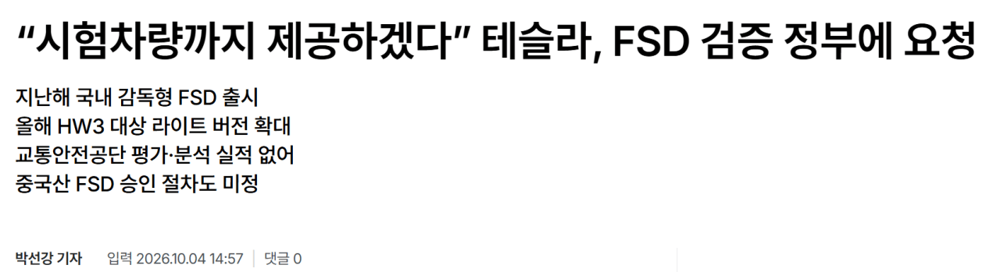
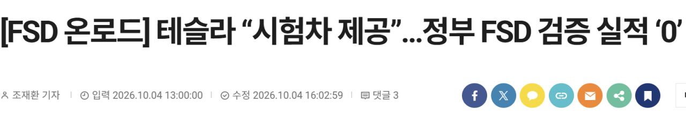
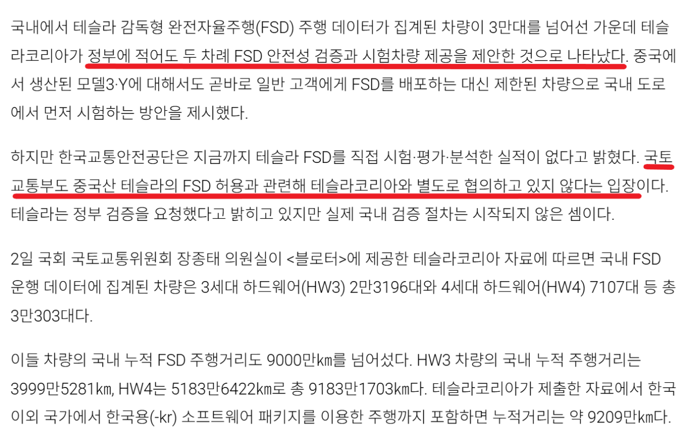
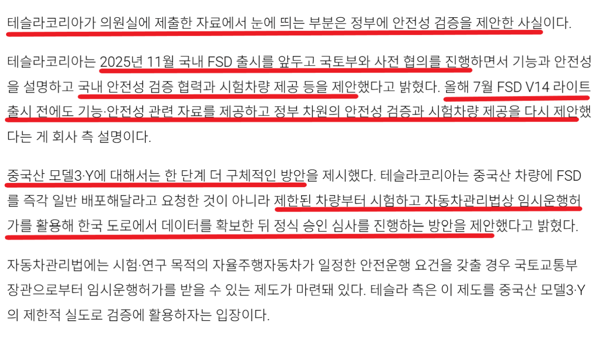

꽤 오래 지속되고 있는 국내 FSD 전면도입에 관한 책임론
어떤 자동차 유투버는 테슬라 코리아가 신청을 안해서 그렇다고 꾸준하게 일갈해왔는데
이게 꽤 설득력을 얻고 있었는지
불과 며칠전 포텐 여론도 신청조차 안한 제조사 탓이라며
테슬라 코리아 매질에 여념이 없었는데
어제 기사가 하나 떠버림


https://www.bloter.net/news/articleView.html?idxno=675002


알고보니 작년 11월부터 테슬라 코리아는 국토부에 안전성 검증하자고, 시험차량도 제공해주겠다고 미드오픈했었음
심지어 올해 7월달에 FSD LITE 풀리기 전에도 다시한번 "안전성 검증해주세요 시험차량 제공할께요" 시전
FSD 국내 전면도입을 위해서는 더 보수적으로 일단 제한된 차량부터 안전하게 검사하고
한국 도로에서 데이터 확보 -> 그 다음 순차적으로 정식 승인 심사 진행해달라고 무려 1년간
똥꼬쇼 하고 다닌게 의원 자료에서 뒤늦게 드러나버림
나름 청렴한 국토부가 마운자로처럼 국민의 안전을 위해 FSD를 막고 있는거다
VS
국민편의와 안전보다 국내기업 눈치보기에 급급한 국토부의 미온적 대처다
과연 진실은?
Fsd 그냥 좀 풀어줘라